We are given a cipher text, ciphertext:-ioeqdi{siwcdke_tjrdelf_uesefmg}
Solution:
Soon after I here the word Vinegar my mind goes to Vigenere Cipher.

flag:
This Cipher is a very simple and common encryption method which forms part of the basis of cryptography. It simply shifts a string of letters a certain number of positions up or down the alphabet.
encoded string: dixoae{oczz_ocz_hvnozm_ja_xvznzm_xdkczm}
Solution:
From the challange discription i understood that it is something related to rotation the alphabets. The first strick in my mind in ROT, so I used https://tech.pookey.co.uk/non-wp/rot-decoder.php to decode it and forund it as ROT5
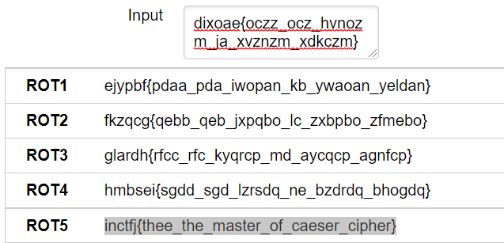
flag:
I poured my vinegar with "abcxyz" on my flag. Can you help me recover it?
We are given a cipher text, ciphertext:-ioeqdi{siwcdke_tjrdelf_uesefmg}
Solution:
Soon after I here the word Vinegar my mind goes to Vigenere Cipher.
flag:
This time i forgot what i pored vinegar with. But i know its of length 6. Recover it.We are given a cipher text.ciphertext:- wecgln{mfu_pgr_rvcbji_hyif_qimcefy}
Solution:
Here we are not given the key. So the using this online tool we can get the flag https://www.boxentriq.com/code-breaking/vigenere-cipher
flag:
Its all about the base
A .py file and a cipher test is given
Solution:
We are given .py file and cipher text.From the .py file we can understand that flag is first encoded in base64 the again in hex. That is done for 5 times. We can manually decode it 5 times or use a code.
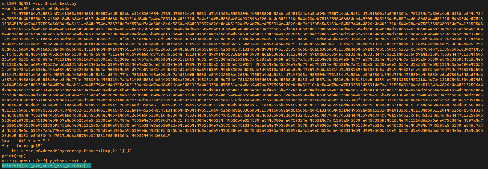
flag:
Given a hex encoded string: 1314190e1c1001024a0825194e145d0e251849251f4e091316032518084a11491407The above string has been Xored against a single character ‘z’.Decode it to a meaningful sentence and get the flag.
Solution:
We are given hex encoded string 1314190e1c1001024a0825194e145d0e251849251f4e091316032518084a11491407, which is ed with "z".By using the follow we can get the flag.

flag:
I am the god of small things!!
Solution:
We are given a file in which we have,n = , e , ct
By using this code we get the flag
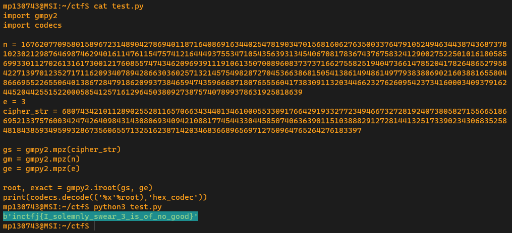
flag:
RSA decryption with a twist!! Remember you can always divide 'e'!!!
Solution:
We are given a file,which contains p,q,e,c.Here the value of e and totient have gcd is 4. The e and totient should be co-primes.Since gcd is 4 we should divide e by 4. Then when we divide e by 4 plain text will be altered so we have to do root of 4 to the plain text.By using the program we can get the flag.

flag:
Joan received a secret mail from her friend, upon looking into it, she found that it contains an encrypted text and sum of key and offset. She is clueless what to do. Help her get the message.
Solution:
Soon after i see the word Rail mail I thought it mught be an hint and googled rail mail cipher and ended up landing on Rail fence cipher.Rail fence cipher requires key and height it decode it. I saw 11 in the challange so started to bruteforce it by different numbers which sum is 11.

flag:
Here's the secret message from Joan to you. Break it and Read it.
Solution:
I have n here so for finding primes i used factordb.com to factorize the n. I got two prime numbers and next gole is t find d.
As we know d=imverse(e,(p-1)*(q-1)), some code would help us find the d value
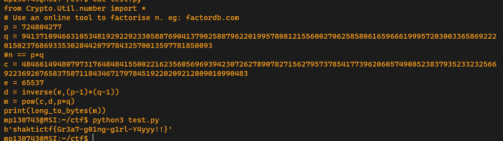
flag:
Joan Clarke was recruited as a part of the 'Government Code and Cypher School' due to her incredible mathematical abilities. How confident are you with your mathematical skills?
Solution:
We are given a .py filw where we know from where the p and q are comming so i tried directlu printing p and q.

We got p and q and its pretty normal RSA from here.
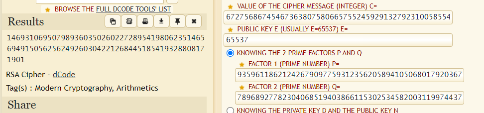
The result is in decimal on converting decimal to hex and hex to ASCII we will get the flag.
flag:
Joan feels this text is unbreakable. Prove her wrong by decoding the file given.
Solution:
This is very simple When ever i decoded I anylysed the cipher.
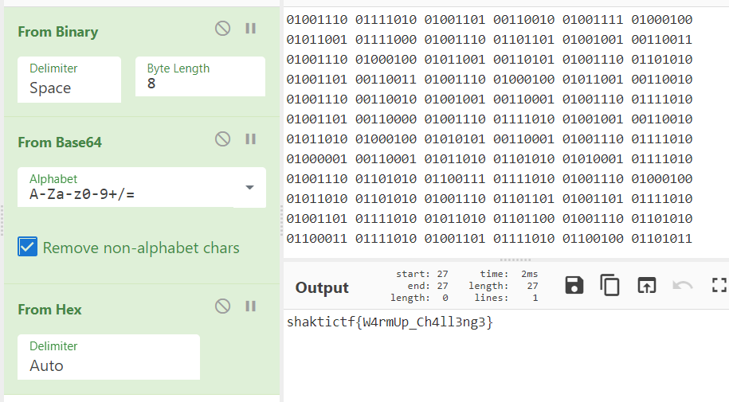
flag:
I once heard a story, about the great Sky of the Greek. And all I can tell you is: "The cipher is what you are seeking for"
P.S, the ciphertext is hex encoded.
Solution:
There is a text file with some encrypted string after running analysis it seems to be hex. so i converted it to ASCII

flag:
It is the little things that matter the most.
Solution:
This is very simpple i just took n anf factorised it and got the primes as 246314 893306 120461 370151 × 285762 819846 573941 679781
Now used dcode to break it
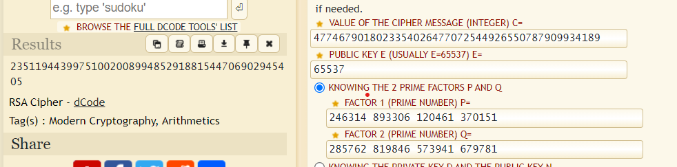
I got a decimal string conveting to hex and again to ASCII i got the flag.
flag:
Looks like before Alice gave the key in wrong hands and someone misused it ;). This time the ciphertext is given to you and seems like the magic of XOR has been done on it again! Can you decrypt the given ciphertext and get the original message back?
Solution:
I just bruteforced with all characters and searched for the flag.
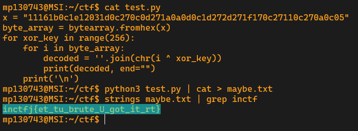
flag:
The most significant digit is not always left unnoticed...
Solution:
i used zsteg, in that some text is printed as flag. Ran an analysis and found as base32 and decoded it.

flag:
Ravi thinks there is something suspicious between these lines of this file. Can you help him find out what is suspicious?
Solution:
SnowSnow the name of the challange itself is the bigest key. Snow is white maybe something related to white space stegnography. I used stegsnow to decode it.
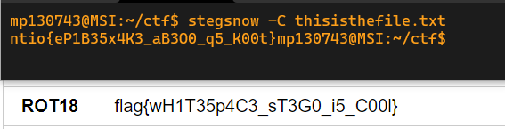
flag:
Dive deep into this image and find the secret in it.
Solution:
I just used foremost to extract all the files in image(foremost -v)

flag:
I forgot the password for this important file, can you help me in finding the password and important information present in this file?
Solution:
We are given pdf file, which is password protected.We can crack the password using pdfcrack dictionary attack diosayudameenelesut.After getting the password when we open the and seacrh for the word flag we get the flag.
flag:
My friend Emily says, she sent an important voice message to me. But I couldn't understand what she sent. Can you help me in understanding it?
Solution:
When we here it all beeps sounds are there ehich remembers me morse codes. morse encoding can be in audio form also.
https://morsecode.world/international/decoder/audio-decoder-adaptive.html helped me a lot.
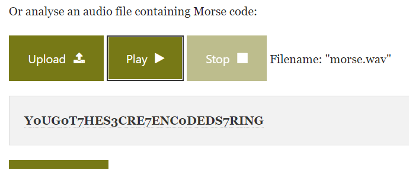
flag:
While I am observing the moon, heard this weird sound but couldn't find out what that is. Can you help me in finding it out?
Solution:
This time the audi file has many different frequencies. There are many tools for audio analysis like sonic vision,spek, audacity etc..
but I like to use sonic vision most of the times. Send this audio file to sonic vision, added spectragram plane... Intrestingly there is a barcode in it.
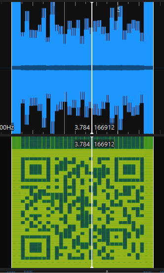
On scanning the bar code we will get the flag.
flag :